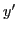
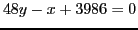
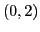
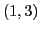
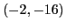

Next: Differentials Up: Maxima, minima and inflection Previous: Curve tracing Contents Index
Trace the following curves, making use of the above rule. Also find the equations of the tangent and normal at each point of inflection.
Solution. Use the above rule.
First step. , , .
Second step.
,
,
 .
.
Third step.
|  | Remarks | Direction of Curve | |||
| 0 | -7 | + | - | concave down | |
| 2 | 13 | 0 | - | max. | concave down |
| 3 | 11 | - | 0 | pt. of infl. | concave up |
| 4 | 9 | 0 | + | min. | concave up |
| 6 | 29 | + | + | concave up |
Fourth step. Plot the points and sketch the curve. To find the equations of the tangent and normal to the curve at the point of inflection , use formulas (6.1), ((6.2). This gives for the tangent and for the normal.
Ans. Max. ; min. ; pt. of infl. ; tan. ; nor. .
We shall solve this using SAGE.
[fontsize=\small,fontfamily=courier,fontshape=tt,frame=single,label=\sage]
sage: x = var("x")
sage: f = x^3 - 6*x^2 - 36*x + 5
sage: f1 = diff(f(x),x); f1
3*x^2 - 12*x - 36
sage: crit_pts = solve(f1(x) == 0, x); crit_pts
[x == 6, x == -2]
sage: f2 = diff(f(x),x,2); f2(x)
6*x - 12
sage: x0 = crit_pts[0].rhs(); x0
6
sage: x1 = crit_pts[1].rhs(); x1
-2
sage: f(x0); f2(x0)
-211
24
sage: f(x1); f2(x1)
45
-24
sage: infl_pts = solve(f2(x) == 0, x); infl_pts
[x == 2]
sage: p = plot(f, -5, 10)
sage: show(p)
Ans. Max.  ; min.
; pt. of infl.
; min.
; pt. of infl.
 .
.
Ans. Max. ; min. ; pt. of infl. .
Ans. Max. ; min. ; pt. of infl. , .
Ans. Max. ; min. ; pt. of infl. .
Ans. Max.  ; min. .
; min. .
david joyner 2008-08-11
![% latex2html id marker 52966
\includegraphics[height=5cm,width=7cm]{exercise-8-11-2.eps}](img2688.png)